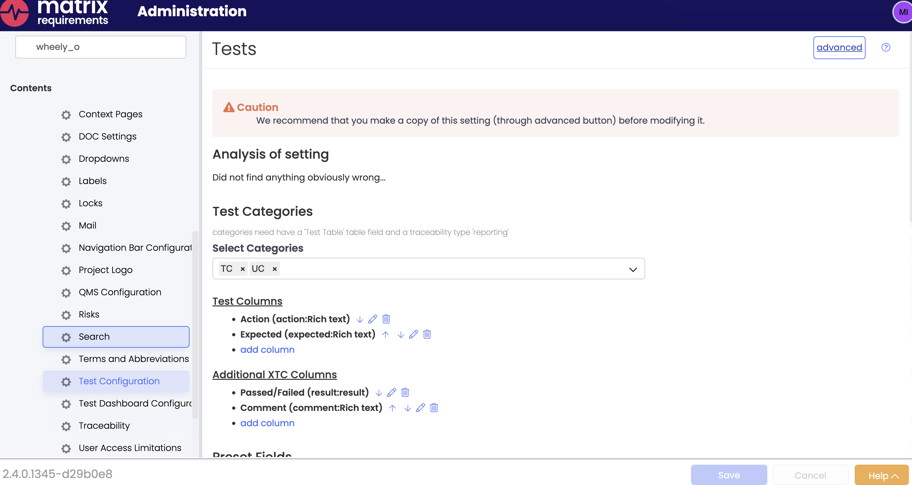
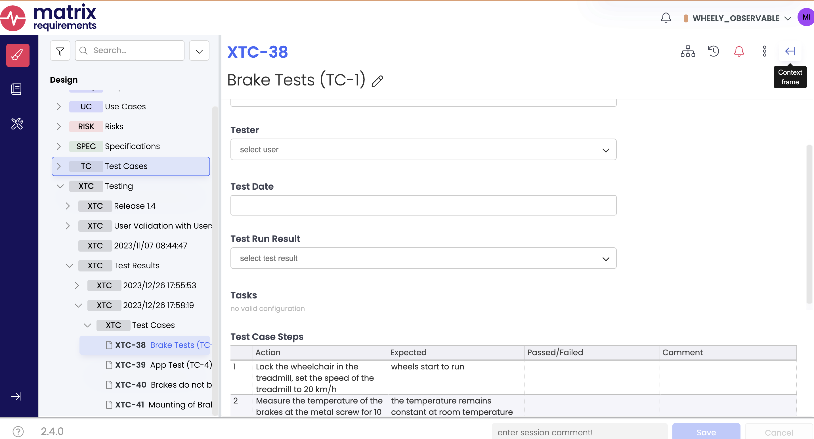
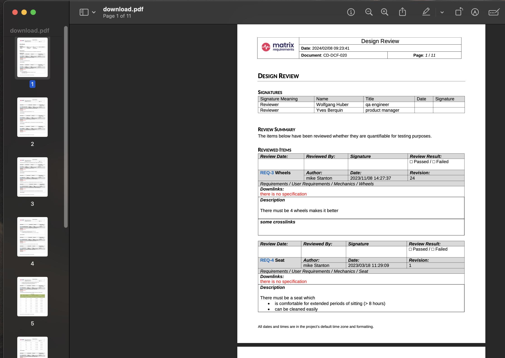
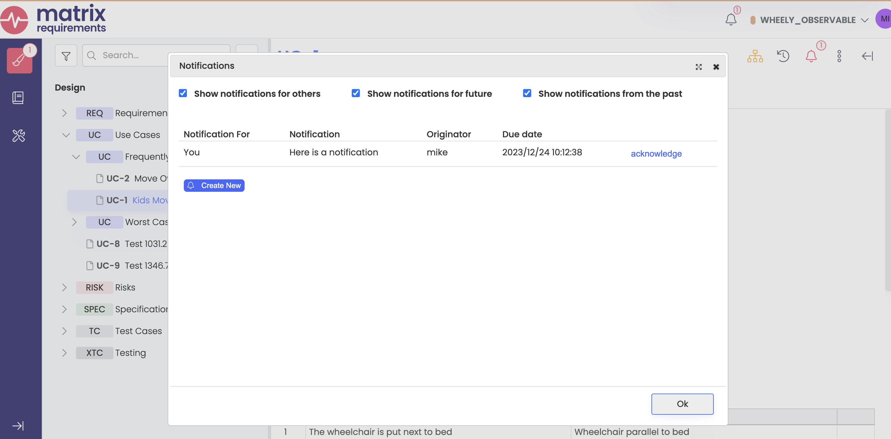

FAQ
The SDK is brand new so there are plenty of things we haven't thought about yet. This FAQ contains answers to questions you're likely to have at some point.
What about saving server settings?
This is easy with Server.getServerSettings(),
as demonstrated in the program below:
const lib = require("./lib.js");
async function run() {
const [server, wheely] = await lib.getServerAndProject();
const settings = await server.getServerSettings();
let favorites = settings.settingList.filter((setting) => setting.key === "favorites");
let favorite = {};
if (favorites.length > 0) {
console.log("Found existing favorites");
favorite = JSON.parse(favorites[0].value);
} else {
favorite = {
car: "Mustang",
food: "Tacos",
music: "Post-rock"
};
await server.putServerSetting("favorites", JSON.stringify(favorite));
console.log("Saved favorites");
}
console.dir(favorite);
}
run().then(() => process.exit(0));
Note that we get a favorites setting, and create a simple object with our favorite things
in it if the setting doesn't exist yet. Here are two runs of the program:
mstanton@darkstar:~/work/matrix-sdk-docs/codes (main)$ node server-setting.js
Saved favorites
{ car: 'Mustang', food: 'Tacos', music: 'Post-rock' }
mstanton@darkstar:~/work/matrix-sdk-docs/codes (main)$ node server-setting.js
Found existing favorites
{ car: 'Mustang', food: 'Tacos', music: 'Post-rock' }
How do I create test cases (XTC Items)?
XTC Items are created by a server-side process from a collection of source items (usually
TC (Test Cases), but it depends on your configuration). You can do this from the SDK by calling
Project.execute() and passing
an ExecuteParam structure
giving the source objects and output folder for the newly-created XTC items.
Normally, the ExecuteParam structure is populated with defaults from the Project
Test Configuration, which you can set up in the Administration panel here:

Because this is usually what you want to use as a source for creating XTCs, we have a
convenience method Project.createExecuteParamWithDefaults() to fill in the mapping from source item fields to
target (XTC) fields. The code below creates a folder "Test Results" if it doesn't exist,
then kicks off creation of XTCs with Project.execute():
const lib = require("./lib.js");
const assert = require("assert");
async function getOrCreateOutputFolder(project, parent, name) {
let tree = await project.getProjectTree();
let xtcs = tree.findFolder(parent);
let outputFolder = xtcs.findDirectFolderByTitle(name);
if (outputFolder == null) {
let folderItem = project.createFolder("XTC");
folderItem.setTitle(name);
folderItem = await project.putItem(parent, folderItem);
return folderItem.getId();
}
return outputFolder.getId();
}
async function run() {
const [server, wheely] = await lib.getServerAndProject();
server.setComment("Creating XTCs");
let tree = await wheely.getProjectTree();
let tcFolder = tree.findFolder("F-TC-1");
// We expect the root TC folder to have some items.
assert(tcFolder.getItemChildren().length > 0);
let param = wheely.createExecuteParamWithDefaults(['F-TC-1'], 'XTC',
"Create XTCs " + performance.now().toString());
param.parentFolder = await getOrCreateOutputFolder(wheely, "F-XTC-1", "Test Results");
console.dir(param);
const result = await wheely.execute(param);
console.log(`Created folder ${result.folder}`);
}
run().then(() => process.exit(0));
Here is the console output after a run, showing the structure of the ExecuteParam object
created for the call to execute(), along with the Id of the folder with the new XTCs:
mstanton@darkstar:~/work/matrix-sdk-docs/codes (main)$ node execute-call
{
input: [ 'F-TC-1' ],
output: 'XTC',
reason: 'Create XTCs 1599.5004580020905',
itemFieldMapping: [
{ fromId: 37379, toId: 37383 },
{ fromId: 37380, toId: 37388 },
{ fromId: 37381, toId: 37389 },
{ fromId: 37382, toId: 37390 },
{ fromId: 37365, toId: 37383 },
{ fromId: 37366, toId: 37388 },
{ fromId: 37367, toId: 37389 },
{ fromId: 37368, toId: 37390 }
],
parentFolder: 'F-XTC-59'
}
Created folder F-XTC-62
mstanton@darkstar:~/work/matrix-sdk-docs/codes (main)$
And here is the state of the project after running two times:
;
Note the Folder named "Test Results" which we've made serve as the parent folder for generating a set of XTCs.
How do I deal with DOC objects?
A DOC is like a unique, stand-alone Item
Category. The DOC describes the fields that it contains,
configures the fields, and includes the content for the fields. This makes it a more complex
object to work with than an ordinary Item, where configuration is done at the Category level.
With that in mind, we've provided the DocItem class, which
has all the features of the Item class with some extra helper methods. First, let's bring down
an existing DOC and explore it with the DocItem class. In the WHEELY_OBSERVABLE Project
we've got DOC-8 which is a Design Review. It has a signature field, a summary rich text
field and a queried list of reviewed items that show up when the document is rendered.
Rather than calling getFields(), you should call getInnerDHFFields() on a DocItem.
This is because at its core, the DOC is the same as any other Item, and has a set of Fields,
however, the names of the fields are of the form "dhf01", "dhf02", and so on. Looking at the UI,
you see much more useful names like "Signatures" and "Review Summary." Method getInnerDHFFields()
allows you to use those human-readable names and see the configuration for the fields easily too.
Let's list the field names in the DOC:
const lib = require("./lib.js");
async function run() {
const [server, wheely] = await lib.getServerAndProject();
let doc = await wheely.getItemAsDoc("DOC-8");
const handlers = doc.getInnerDHFFields();
console.log(`Fields in DOC-8:`);
for (let handler of handlers) {
console.log(`"${handler.getFieldName()}" [${handler.getFieldType()}]`);
}
}
run().then(() => process.exit(0));
Which gives the following output, showing the user-readable field names and the field types:
IDocFieldHandler offers the following methods in addition to what IFieldHandler provides:
export interface IDocFieldHandler extends IFieldHandler{
dhfFieldConfig: IAnyMap;
setDHFConfig(config:IAnyMap):void;
getDefaultConfig():any;
getXmlValue():string;
getFieldName(): string;
setFieldName(value: string): void;
addSignatures (signatures: string[], includeAll?:boolean): void;
}
We can print the field configuration as a JSON object, and the field data (string or JSON object).
const lib = require("./lib.js");
function print(data) {
try {
console.dir(JSON.parse(data));
} catch(e) {
console.log(data);
}
}
async function run() {
const [server, wheely] = await lib.getServerAndProject();
let doc = await wheely.getItemAsDoc("DOC-8");
const handlers = doc.getInnerDHFFields();
console.log(`Fields in DOC-8:`);
for (let handler of handlers) {
console.log(`"${handler.getFieldName()}" [${handler.getFieldType()}]`);
console.group()
console.dir(handler.dhfFieldConfig);
// Print the value of the field:
print(handler.getData());
console.groupEnd();
}
}
run().then(() => process.exit(0));
Which gives the following output, showing the user-readable field names and the field types:
Fields in DOC-8:
"Signatures" [signaturebox]
{
columns: [
{
name: 'Signature Meaning',
field: 'col0',
columnType: 'type6',
pos: 0
},
{ name: 'Name', field: 'col1', columnType: 'type4', pos: 1 },
{ name: 'Title', field: 'col2', columnType: 'type0', pos: 2 },
{ name: 'Date', field: 'col3', columnType: 'type5', pos: 3 },
{ name: 'Signature', field: 'col4', columnType: 'type3', pos: 4 }
]
}
[
{ col0: 'Reviewer', col1: 'wolfgang', col2: 'qa engineer' },
{ col0: 'Reviewer', col1: 'yves', col2: 'product manager' }
]
"Review Summary" [richtext]
{ page_break: false }
The items below have been reviewed whether they are quantifiable for testing purposes.
"Reviewed Items" [items]
{
breadcrumb: true,
extracolumn: '',
showlinks: true,
page_break: false,
folderDetails: '',
showUpOnly: false,
showDownOnly: false,
showDeeplinks: false,
showExternal: 0,
dateoptions: '',
refdocs: false,
hideLinkErrors: false,
hideLabels: false,
showAllParentFolders: false,
hideEmptyFolders: false,
includeInToc: false,
breakAfterItems: false
}
[ { to: 'F-REQ-1', title: 'Requirements' } ]
To render and download a DOC as a PDF, you can call toPDF() and downloadJobResult():
const lib = require("./lib.js");
const fs = require("fs");
async function run() {
const [server, wheely] = await lib.getServerAndProject();
let doc = await wheely.getItemAsDoc("DOC-8");
let jobId;
let jobData;
const urlToPDF = await doc.toPDF((jid, details) => {
console.log(`Progress: ${details.progress}%`);
if (details.progress == 100) {
// When the job is finished, save information on the output.
jobId = jid;
jobData = details.jobFile;
}
});
if (jobData) {
// There are several output files in DOC rendering, focus on the one which is the PDF.
let fileInfo = jobData.filter(d => d.restUrl == urlToPDF)[0];
console.log(`Downloading Job ${jobId} File ${fileInfo.jobFileId} as download.pdf...`);
let result = await wheely.downloadJobResult(jobId, fileInfo.jobFileId);
fs.writeFileSync("download.pdf", Buffer.from(result));
}
}
run().then(() => process.exit(0));
We can render a DOC as PDF, Word or HTML. The program saves the PDF render to disk where it can be opened with any PDF file reader:
darkstar:~/matrix-sdk-docs/codes $ node get-doc-8-pdf.js
Progress: 10%
Progress: 40%
Progress: 40%
Progress: 40%
Progress: 90%
Progress: 91%
Progress: 91%
Progress: 100%
Downloading Job 4853 File 7393 as download.pdf...
;
How do I run a server hook?
A hook is a server-side job with a unique name that accepts an Item Id and a
payload string. Method runHook() on
the Project class kicks off the
hook. Some hooks return a jobId which can be polled for a result at job completion.
Project.waitOnJobCompletion()
makes it easy to do that. Example code:
...
const result = await project.runHook(reqs[0], "publish_marketplace", "");
const jobId = JSON.parse(result).jobId;
const jobResult = await project.waitOnJobCompletion(jsonResult.jobId, (jid, progress) => {
console.log(`${jid}: progress ${progress}`);
});
console.log(`Final result: ${jobResult.length} generated files`);
if (jobResult.length > 0) {
console.dir(jobResult[0], { depth: null, colors: true });
}
And output:
mstanton@darkstar:~/work/hook-test$ node hook-example
4783: progress 10
4783: progress 10
4783: progress 10
4783: progress 100
Final result: 1 generated files
{
restUrl: 'https://clouds5.matrixreq.com/rest/1/WHEELY_OBSERVABLE/job/4783/7250',
jobFileId: 7250,
visibleName: 'publishlog.txt',
internalPath: '/generated/j4783_publishlog.txt',
mimeType: 'text/plain'
}
mstanton@darkstar:~/work/hook-test$
Why do I have to load the Axios library separately?
Currently, we're shipping the Server SDK as a rollup of all our dependencies.
For Node this is not ideal, and we plan to load dependencies from the Node
environment in a future release. Axios is required for just one call,
Project.uploadLocalFile()
so we prefered not to bundle it.
Can I create Notifications with the SDK?
Yes, as long as the feature is enabled on the server. The Item class includes two methods for manipulating "Todos," another name for notifications:
- createTodo(users, type, text, atDate) - create a Todo for multiple users and return ids. The
typefield is a string from theTodoTypesenum - getTodos(includeDone, includeAllUsers, includeFuture) - return information on Todos active for this item
Additionally, Project.getTodos() returns information
on all Todos active in the Project. Let's create two Todos and verify that they can be found from the
`Project`` class:
const lib = require("./lib.js");
async function run() {
const [server, wheely] = await lib.getServerAndProject();
let ucs = await wheely.searchForItems("mrql:category=UC");
let todoId1 = await ucs[0].createTodo(["mike"], "user", "Here is a notification", new Date());
let todoId2 = await ucs[1].createTodo(["francois"], "user", "Here is a notification", new Date());
console.log(`Created Todos ${todoId1}, ${todoId2}`);
const todos = await wheely.getTodos(undefined, undefined, true);
console.dir(todos, {});
}
run().then(() => process.exit(0));
The returned structure includes all Todos in the project, as well as a summary report of the active
Todos for the current user. My API Token is attached to my user account which is mike, so we see that
Mike has 1 Todo:
mstanton@darkstar:~/work/matrix-sdk-docs/codes (main)$ node todos
Created Todos 382, 383
{
todos: [
{
todoId: 383,
userId: 7,
login: 'francois',
projectShort: 'WHEELY_OBSERVABLE',
itemRef: 'UC-2',
auto: false,
originatorUserId: 23,
originatorLogin: 'mike',
action: [Object],
createdAt: '2023-12-24T10:12:38.458Z',
createdAtUserFormat: '2023/12/24 10:12:38',
future: false
},
{
todoId: 382,
userId: 23,
login: 'mike',
projectShort: 'WHEELY_OBSERVABLE',
itemRef: 'UC-1',
auto: false,
originatorUserId: 23,
originatorLogin: 'mike',
action: [Object],
createdAt: '2023-12-24T10:12:38.352Z',
createdAtUserFormat: '2023/12/24 10:12:38',
future: false
}
],
todoCounts: [
{
userId: 23,
login: 'mike',
projectId: 360,
projectShort: 'WHEELY_OBSERVABLE',
nbTodos: 1,
firstTodos: [Array]
}
]
}
mstanton@darkstar:~/work/matrix-sdk-docs/codes (main)$
If I log in as mike, I can see the newly created Todo:

The Matrix server resists creating too many similar Todos. So if the user, date and description are the same as an existing Todo, a new Todo won't be created (-1 will be returned as the Todo Id).